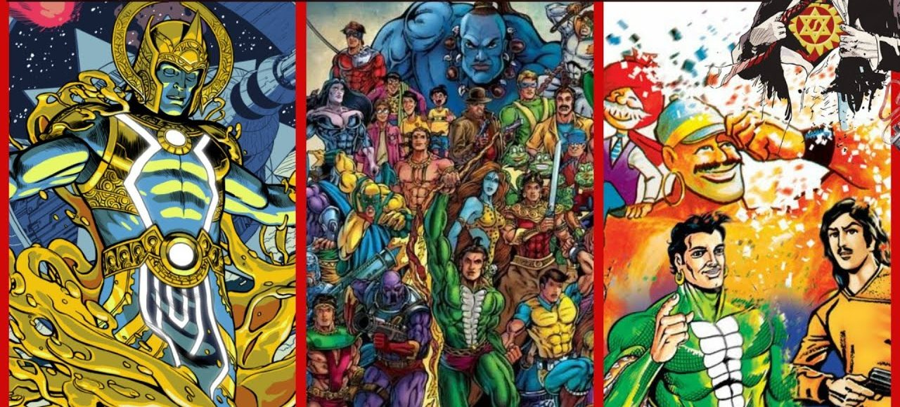
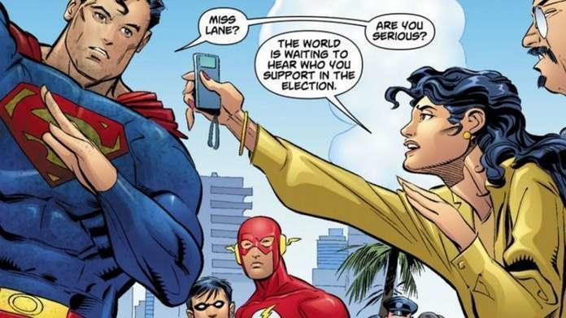
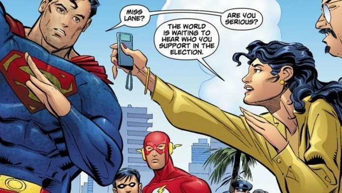

| Chishiki Blog Station | |
How Comics Influences The World |
|
|---|---|
|
What is Comic:
Comics is a narrative medium used to express ideas with images, often combined with text or other visual information. It typically takes the form of a sequence of panels of images. Textual devices such as speech balloons, captions, and onomatopoeia can indicate dialogue, narration, sound effects, or other information. There is no consensus amongst theorists and historians on a definition of comics; some emphasize the combination of images and text, some sequentiality or other image relations, and others historical aspects such as mass reproduction or the use of recurring characters. Cartooning and other forms of illustration are the most common image-making means in comics; fumetti is a form that uses photographic images. Common forms include comic strips, editorial and gag cartoons, and comic books. Since the late 20th century, bound volumes such as graphic novels, comic albums, and tankōbon have become increasingly common, while online webcomics have proliferated in the 21st century. |
Aside from superhero, the main genres of comic books are: alternative/esoteric, manga, science fiction, fantasy, comedy, action/adventure, horror, humor, romance, children's, and adult etc.
MangaManga refers to an Asian style of trade paperback graphic novel that has recently reached new heights of popularity in the United States. Generally, Manga contains several genres that are relevant to very specific types of readers. Moreover, Shojo (also has the spelling Shoujo) is a genre typically read by young teenage girls, usually involving drama and romance. Whereas Shonen refers to manga primarily for boys and features humorous stories and high levels of action. Mainly, Manga is a translation of the original Japanese form, whose print is from right to left, in order to retain the authenticity of the original version. In particular, Manga titles are also frequently part of a series containing several volumes, and can be very addictive! |
Slice of LifeMany comics and graphic novels offer thoughtful portrayals of real life. These can take the form of autobiography, relationship drama, or historical fiction, among other examples. Mainly, Slice-of-life comics are frequently popular with older teenagers and adults in search of a contemplative reading. Recently, the Slice-of-Life comics and graphic novels are having a moment as older teenagers tend to enjoy comics with a real flair to them. |
HumorThere are plenty of comics that live up to the name “comic!” From Mad Magazine to Simpsons Comics to editorial cartoons, comics are a great avenue for exaggeration, satire, and just plain ridiculousness. Cartoonists use different kinds of humor to communicate their message — the most common are irony, satire, and sarcasm. Especially in the arena of politics, cartoonists tend to use their craft to communicate vital information to the masses. Instead of ‘shiny wrapping and flowery bows’, political cartoonists successfully use humor to promote their message. It helps to make politics accessible to the masses. |
Non-frictionalComics have proven to be a great educational tool, and are in the process of constant creation to explore such diverse topics as science, history, politics, and biography. Non-fiction comics, also known as graphic non-fiction, are a non-fiction element in the comics medium. Mainly, embracing a variety of formats, from comic strips to trade paperbacks. |
Science-Fiction/FantasyThose who like to imagine other worlds will find a multitude of fantastic universes to explore in comics. Mainly, science fiction comics began as early as the 1930s in US newspapers. Moreover, they have since spread to many countries around the world. However, the two largest publishers of this comic genre today arguably are the United States and Japan. Whereas fantasy comics have been around as long as the medium itself. The early years of fantasy comics began in the golden age and are heavy with notable works ranging from the All-American comics` (and later DC comics`) Greek myth-inspired superhero Wonder Woman to Dell`s Tarzan. |
HorrorFrights, chills, and thrills abound in comics with creepy illustrations and suspense-building stories. That is the crux of the horror comic book genre. Whereas Horror Comic strips, manga, and graphic novels are a comic classification that intends to impose fear and terror to frighten its readers. Scary comics can either be supernatural or non-supernatural. It aims to provoke a response; psychological, emotional, or a physical reaction to fear. And to elicit this response, horror comic books use various techniques; unreal figures such as ghosts and aliens and real figures like serial killers and lunatics. However, a horror comic's main ingredient is to have something unexpected in its story, something that can build the reader's fear of the unknown and his/her own anxieties. |
SuperheroOne of the most celebrated comic book genres, and you must definitely be familiar with this genre. Moreover, the superhero genre has permeated pop culture and the internet. Mainly, Superhero comics feature the likes of Superman, Batman, Spider-Man, and the X-Men, individuals often clad in capes and masks, who use their extraordinary abilities to protect humanity. Moreover, superheroes have captured the public imagination ever since the first appearance of Superman in Action Comics #1 in 1938. This first issue was heavy on action, adventure, and memorable iconic characters. One can say that Hero comics can be a form of modern mythology. While some characters and series have been in existence since the 1940s, new characters with different abilities, costumes, and universes are constantly on the verge of invention. |
Through the decades of the last century and into our own, comic books have influenced culture as well as reflected it. Now an ingrained part of our cultural lexicon, the characters, conventions, art, and even language of comic books are everywhere including advertising, politics, and entertainment, in addition to being the subject of a growing field of scholarship. From their humble beginnings as reprints of comic strips, comic books have matured into works of art, literature and cultural significance in their own right. “I think at a certain level, comics can't help but deal with social issues,” said Roy Bearden-White, assistant professor of English at South Plains College. “The very idea of the superhero is dealing with right and wrong. That's a lot of what we deal with on a daily basis. In another respect, I see comics as a reflection of who we are.”
|  |
Indian comicsEvery country, every religion, every culture and every writer have there different way of telling a story. If I talk about Indian Comics, they have a Historical,Funny way with engaging with the readers. Comics releases the shackeles of our imagination.We went on adventures with Supandi, fought crime with the likes of Nagraj and Super Commando Dhruva, and even learned about mythology in the pages of Amar Chitra Katha. |
 

Comic books have been one of the most popular segments of art and communication since it was created. During Human History, the comics were adapted to events every time. It is possible to notice that not only the creation of Captain America in the '40s to support the soldiers in World War II. But also the character offered solace when the attack on the World Trade Center Building took place in 2001. Sexuality issues were also inserted in the comics to debate contemporary subjects. Mainly, to show that comics can change, tell stories of real people, and respect their differences. Whereas comic books are part of pop culture, most people might have an inaccurate thought process. Especially when it comes to comic books. People might think something about children and teenagers, but not about adults. They are not only wrong about this though, but they also don't have any knowledge about how comics affect people's lives. And how this kind of entertainment and mass communication has been profitable through the years. Hot topics that are still relevant to this day include the views of women, LGBT persons, and ethnic minorities within society. Women have had a role in comics since their creation. Early depictions of women usually put them in the role of damsel in distress/ plot device or purely as a sex symbol. In 1940, the first true, although mostly unheard of, female superhero is Fantomah (Markstein n.d, para 3). Fantomah, along with other early female comic protagonists Wonder Woman and Sheena, fell into the Jungle Goddess category. However, the role of the female in the background with the creation of the CCA. Furthermore, female characters didn't find a positive voice in comics until the 1980s and 1990s (Felton n.d., para 1). Whereas series such as Love & Rockets, Ghost World, and Tank Girl promoted strong portrayals of women, often with feminist leanings dealing with the exploration of sexuality in positive ways and the dismissal of expected roles in society.
Comics are for everyone, as you have read all about the above. But what they represent and mean to each individual varies. Personally, I have been reading comics for a while now. As an individual I am more into Manga(Japanise Comic),Manwha(Korean Comic). The genre I like include Romance, Fantasy.I also have my dislikes like psychological, emotional comics the reason is simple i just dont like being emotional and psychological stuf make my head hurt(i am just stupid :) ). Comics help me to explore an imaginative world with the eyes of the writer and the editor.
| Naruto | |
| One Piece | |
| Onepunch-Man | |
| Another World With My Smartphone |
|
| A Story About Treating A Female Knight | |
| The Rising Of The Shield Hero |
|
| Please Don't Bully Me, Nagatoro | |
| Please Go Home, Akutsu-San! |